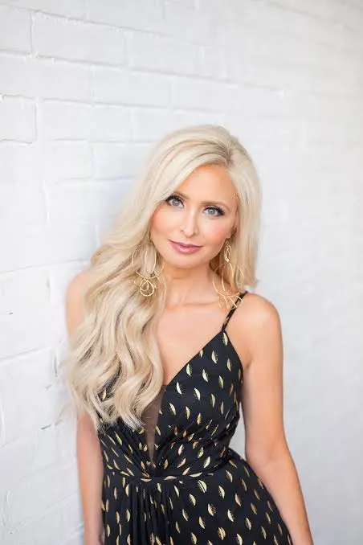
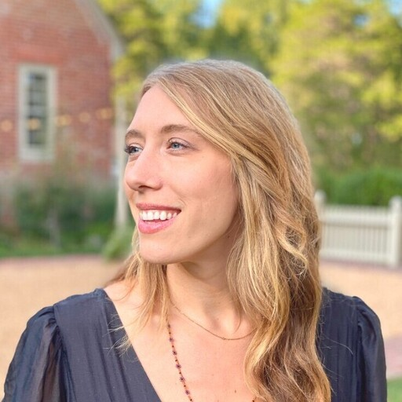

Advisory Boards
Building governance structures that center the voices of creators and trust experts.
The Independent Journalism Atlas is committed to building infrastructure that serves creators and strengthens journalism's role in democracy. Our advisory boards ensure that the people most affected by our work—creators themselves, and experts in journalistic trust and ethics—have real input into how we develop standards, partnerships, and tools.
Creator Advisory Board
The Creator Advisory Board shapes our standards from the inside out — ensuring our frameworks, partnerships, and tools reflect the realities of independent journalism as it's actually practiced. Members have direct input on what we build and how we evolve.

Micah Gelman
Co-Founder, Local News International
.jpeg)
Austin Graff
Founder, Curiosity & Connection

Amber Sherman
Policy Organizer

Lisa Remillard
Co-Founder, BEONDTV; Founder, ProMedia Coaching
Matt Kiser
Founder & Editor, WTF Just Happened Today
Trust & Standards Advisory Board
The Trust & Standards Advisory Board brings deep expertise in journalistic ethics, credibility, and public trust to a moment when the mechanisms for demonstrating credibility are evolving faster than the frameworks for assessing it.
Robert K. Elder
President & CEO, Outrider Foundation
.jpg)
Kevin Merida
Independent journalist and media leader
Former Executive Editor of the Los Angeles Times and former Managing Editor of The Washington Post. One of the most respected editorial leaders in American journalism.

Mollie Muchna
Creator Standards Project Lead, Trusting News

Jason Rezaian
Director of Press Freedom Initiatives, The Washington Post
Our Governance Philosophy
The information industry has long privileged containers over creators. We're working to change that. Our advisory boards are not ceremonial—they have real influence over how standards and partnerships evolve.
We're building The Independent Journalism Atlas with an explicit pathway to community/steward ownership. We're building infrastructure that should outlast us—commons for creator journalism, not empire-building.